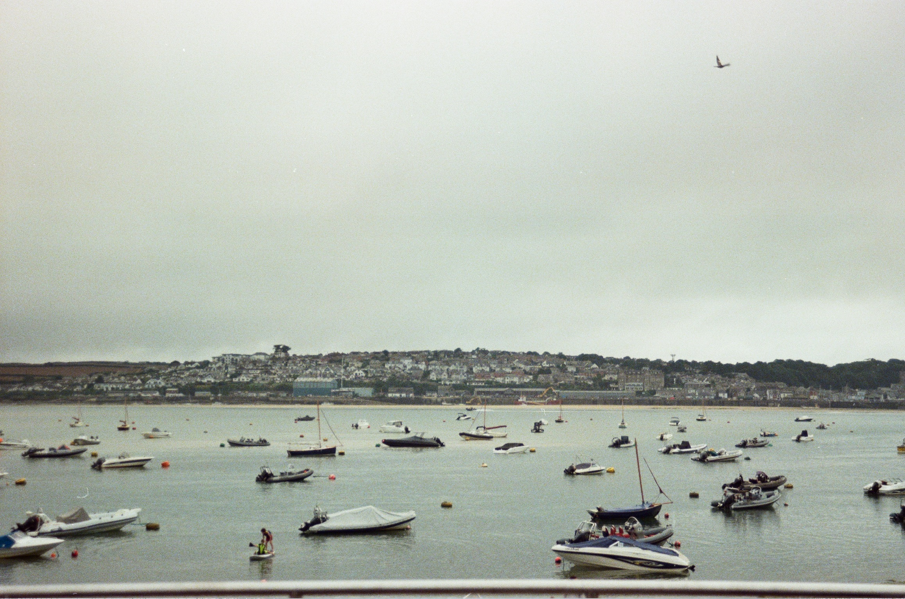

Thought Piece
Samuel Pachoud on market-led vs planned energy systems
How Britain can balance competition, planning and delivery in the energy transition
Taking a more market-led approach risks uneven, untargeted build-out; whilst overindexing on planning risks higher upfront costs and delays. Politics compounds this further, with long-termism a challenge in increasingly polarised democratic political systems.
Britain already runs planning-backed markets: CfDs steer investment while competition sets price. Yet process and grid access still impede development. Connections and planning reform, accompanied by grid infrastructure buildout, can accelerate the deployment of private capital.
Other markets vary on the market-led to planning spectrum: The US, Australia, France and China take different approaches with distinct trade-offs. Lessons can be learned from these market makers on how GB should facilitate the development of its own energy system.
Net zero targets have set timelines for development. For GB, Clean Power 2030 sets a bold ambition with a plan. To ensure policies and intent gets delivered, government and policy makers now must remove barriers and stage infrastructure so private capital can deploy at pace.
Defining market-led vs planned energy systems
‘Market-led’ and ‘planned’ are used to describe systems with differing levels of governmental/regulatory oversight. In market-led systems, private developers and capital decide what gets built, where and when, guided by prices and open competition. In planned systems, a body with oversight sets the infrastructure blueprint, choices and sequencing and then invites delivery. Most modern power systems sit somewhere in between. These types of schemes are designed to mobilise investment, helping balance cost, resilience and sustainability.
The trade-offs and the politics
The more we rely on markets, the more we risk uneven and untargeted buildout. The more we rely on planning, the more we risk higher upfront costs and slower development. Our political system adds time pressure to this; voters generally care more about bills today than emissions in the future and administration changes can disrupt long term planning. Yet long-termism is required; grid balancing costs were around £2.7bn in 2024-25, and without faster network build and better asset siting, may reach up to £8bn by the end of the decade. Strategic planning aims to cut these avoidable future costs whilst keeping the present day feasible.
The UK’s hybrid system
Britain already uses planning-backed markets. CfDs, for example, are a market instrument nested inside a planning choice: The government decides what to auction and for how long, whilst competition sets the price. These support the development of offshore wind, solar and other low-carbon generation. Yet project finance in GB is consistently impeded by connection, planning and network challenges. Revisiting planning rules to rewrite overlapping processes for the net-zero age should enable faster, clearer and fewer decisions. Addressing inadequacies in the grid infrastructure today prevents the delay of shovel-ready projects struggling to get connection and avoids future balancing costs. Other power systems can also give market makers insight on what to consider going forward.
Lessons learned from other power systems
US
The Inflation Reduction Act offers simple, technology-neutral tax credits. Project revenues are stacked: merchant exposure or a power contract, plus monetised federal credits. Whilst risk varies by region, incentivising clean generation unleashed a rush of private projects. However, transmission and permitting often trail demand. Finance has been simplified, but delivery still hinges on process reform to enable asset buildout. Whilst this has been shown as an effective way to mobilise private investment, it requires significant investment that other governments may well struggle to provide.
Australia
Australia’s National Electricity Market (NEM) also sits closer to the market-led end of the spectrum. Under today’s ‘open access’ rules, any compliant generator can connect and compete, with investors wearing most location and congestion risk. If developers connect where the grid is weak, they face more curtailment (being told to reduce output) and worse marginal loss factors (payment factors for power being lost in the wires) – so revenues fall accordingly. Because developers carry that risk, they demand higher returns or avoid weak spots. Market-led systems benefit from clear early locational signals and enforced connection discipline, else higher risk premia and stranded megawatts can occur.
France
France is doubling down on central planning for nuclear. The new Evolutionary Power Reactor (EPR2) programme – six reactors across Penly, Gravelines and Bugey – is supported by accelerated procedures near existing sites and state-backed financing with a CfD-style price ceiling (c. €100/MWh). The trade-off is capital concentration and long schedules, but the benefit is durable, low-carbon baseload for a renewables-heavy system. As part of the wider power system, market makers hope that slower, capital-intensive baseload will pair with faster, rule-driven renewables, underwritten by transparent pricing and grid staging.
China
China takes an industrial-scale planning approach. The country added roughly 277GW of solar in 2024 alone (vs 1.6GW in UK), pushing utility-scale PV capacity above 880GW, then signalled a pivot to more market-based power pricing. As such, industry now expects growth to cool in 2025 from the 2024 surge. China has also developed a strong fleet of relatively low cost nuclear through early subsidisation, and continues to be the leading electrostate, leveraging significant network and technology investment from the past 20 or so years. China’s political system enables much longer term planning than Western democracies, which should be considered when taking lessons from their successes in these areas. Regardless, this demonstrates how planning can support supply chains and lower costs, but market design is still critical as variable renewables scale.
An integrated approach
To support the deployment of private capital in a directed manner, government and system operators should set the rules, and then let the markets work. By establishing ‘what, where and when’ market makers provide a framework for developers to compete on the ‘how’ and ‘for how much’. A spatial plan for networks, storage, flexible demand and generation, governed in public and updated on a fixed cycle, provides the ‘what’. Market signals that reward being in the right place at the right time help provide the ‘where’. Faster, simpler consents and processes will also speed up development and support the ‘when’. Britain’s National Energy System Operator (NESO) and its Strategic Spatial Energy Plan are the right tools, provided they are paired with connections reform and investment routes that keep private capital flowing.
Quick-fire industry review
What is the best near-term commercial opportunity in the space?
Grid-aware operations that fuse operational technology with IT. Automating dispatch, constraint management, and DER orchestration saves real money today and scales effectively with AI.
What is the single biggest barrier?
Bad communications with the public. A lot of the work is done in the energy industry bubble – ultimately market stakeholders are there to serve the end consumer. Improving engaging with consumers and simplifying the value to them will help with the political challenges faced by the power system.
What policy change would help the industry the most?
Rewrite the planning rulebook from first principles for energy corridors, storage and substation upgrades.
What is the most overhyped misconception today?
That ‘planning’ equals high cost and ‘markets’ equal low cost. The truth is that bad siting and slow processes are expensive; good planning plus competition is cheaper over time. Also there’s a massive misconception around costs and benefits to the population, as big numbers are thrown around without being explained easily for the consumer.
Which one metric would you track monthly for the industry?
Consumer engagement that actually moves the system; participation in flexibility programmes and time-of-use tariffs, measured against regional constraint costs.
For those interested, where can they learn more?
NESO’s Clean Power 2030 Action Plan for Britain’s pathway, or other power systems documentation on their planned approaches. Leverage AI to upskill on the topic. Utility Week in the UK is good.
Samuel Pachoud is a Partner in EY’s Industrials & Energy practice. He has two decades of experience within the sector, mainly spending his time advising clients on how to respond to the challenges of climate change and a fair and equitable energy transformation. For those interested in learning more on this topic, please reach out to Samuel via his LinkedIn profile.
The views reflected in this article are those of the authors and do not necessarily reflect the views of Ernst & Young LLP or other members of the global EY organisation.